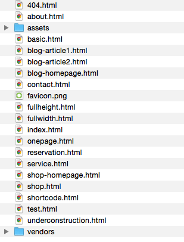
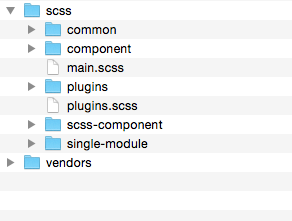

We would happily welcome feedback from you on how, if anywhere, you would like this documentation improved. If you would find anything a little bit easier and more helpful if we went into more detail, or explained something a little better - we'd be happy to hear it. We want AQUA to be the best theme! If you have any comments, please mail us via the form on http://www.themeforest.net/user/themeroyal
After unzip the download pack, you'll found a Template Folder with all the files.
You can view this Template in any browser, you can display or edit the Template without an internet connection.
Once the files are done uploading go to www.yourdomainname.com/index.html
Document Structure:

This Template has a Responsive layout and is based on the Bootstrap Framework. For more information about this visit GetBootstrap.
The default Bootstrap grid system utilizes 12 columns, making for a 940px wide container without responsive features enabled. With the responsive CSS file added, the grid adapts to be 724px and 1170px wide depending on your viewport. Below 767px viewports, the columns become fluid and stack vertically.
These are the css files that are loaded into templates in Head Section.
<head>
<meta charset="utf-8">
<meta http-equiv="X-UA-Compatible" content="IE=edge">
<title>Aqua | Spa and Beauty HTML5 Template</title>
<link rel="shortcut icon" href="./favicon.png">
<meta name="description" content="Aqua | Spa and Beauty HTML5 Template">
<meta name="viewport" content="width=device-width, initial-scale=1"><!-- build:css assets/assets-compressed/styles/vendors.css -->
<link rel="stylesheet" href="assets/styles/plugins.css">
<link rel="stylesheet" href="assets/fonts/aqua/aqua.css">
<link rel="stylesheet" href="assets/fonts/icon-fonts/styles.css">
<link rel="stylesheet" href="vendors/flexslider/flexslider.css">
<link rel="stylesheet" href="vendors/malihu-custom-scrollbar-plugin/jquery.mCustomScrollbar.css">
<!-- endbuild -->
<!-- build:css assets/assets-compressed/styles/main.css -->
<link rel="stylesheet" href="assets/styles/main.css">
<!-- endbuild -->
<!-- build:js vendors/vendors-compressed/modernizr.js -->
<script src="vendors/modernizr/modernizr.js"></script>
<!-- endbuild -->
</head>
Google Web Fonts
By default, the template loads this font from Google Web Font Services, you can change the font with the one that suits you best. You can change the font into assets/styles/plugin.css
@import url("http://fonts.googleapis.com/css?family=Josefin+Sans:400,600,700,400italic,600italic,700italic");
Remember change
body {
font-family: "Josefin Slab", serif;
font-weight: 600;
font-size: 16px;
color: #222222;
line-height: 1.6;
text-rendering: auto;
-webkit-font-smoothing: antialiased; }
These are the JS files that are loaded into templates in end of the Body Section.
<script src='vendors/jquery/dist/jquery.min.js'></script> <script src='vendors/bootstrap/dist/js/bootstrap.min.js'></script> <script src='vendors/flexslider/jquery.flexslider-min.js'></script> <script src='vendors/jssor-slider/js/jssor.slider.mini.js'></script> <script src='vendors/jquery-ui/ui/minified/datepicker.min.js'></script> <script src='vendors/countdown/jquery.plugin.min.js'></script> <script src='vendors/countdown/jquery.countdown.min.js'></script> <script src='vendors/jquery-mousewheel/jquery.mousewheel.min.js'></script> <script src='vendors/malihu-custom-scrollbar-plugin/jquery.mCustomScrollbar.js'></script> <script src='vendors/jQuery.dotdotdot/src/js/jquery.dotdotdot.min.js'></script> <!-- endbuild --> <!-- build:js assets/assets-compressed/scripts/main.js --> <script src='assets/scripts/main.js'></script>
This is the complete code for main.js, is responsible for all events in the Template. You can edit the following file according to your requirements.
jQuery(document).ready(function($) {
'use-strict';
function ROsmoothScroll() {
if (navigator.appVersion.indexOf("Mac") == -1) {
$('body').append("<script src='vendors/smooth-scroll/SmoothScroll.js'></script>");
}
}
ROsmoothScroll();
function ROtesttimonialSlider($elem) {
if ($elem.length) {
$elem.flexslider({
controlNav: false,
directionNav: true
});
}
}
ROtesttimonialSlider($('#ro-testimonial-slider'));
function ROtextEllipsis() {
$(".ro-ellipsis").each(function() {
$(this).dotdotdot();
});
$(window).on('resize', function() {
$(".ro-ellipsis").each(function() {
$(this).dotdotdot();
});
});
}
ROtextEllipsis();
function ROratingStar() {
$('.ro-rating').each(function() {
var point = $(this).attr('data-rating');
if (point == 5) {
$(this).children().addClass('ro-rated');
} else {
$(this).children().eq(point).prevAll().addClass('ro-rated');
}
});
}
ROratingStar();
function ROhomeSlider1() {
var _SlideshowTransitions = [
//Fade
{
$Duration: 1200,
$Opacity: 2
}
];
var _CaptionTransitions = [];
_CaptionTransitions["L"] = {
$Duration: 800,
x: 0.6,
$Easing: {
$Left: $JssorEasing$.$EaseInOutSine
},
$Opacity: 2
};
_CaptionTransitions["R"] = {
$Duration: 800,
x: -0.6,
$Easing: {
$Left: $JssorEasing$.$EaseInOutSine
},
$Opacity: 2
};
_CaptionTransitions["T"] = {
$Duration: 800,
y: 0.6,
$Easing: {
$Top: $JssorEasing$.$EaseInOutSine
},
$Opacity: 2
};
_CaptionTransitions["B"] = {
$Duration: 800,
y: -0.6,
$Easing: {
$Top: $JssorEasing$.$EaseInOutSine
},
$Opacity: 2
};
var options = {
$AutoPlay: true, //[Optional] Whether to auto play, to enable slideshow, this option must be set to true, default value is false
$DragOrientation: 3, //[Optional] Orientation to drag slide, 0 no drag, 1 horizental, 2 vertical, 3 either, default value is 1 (Note that the $DragOrientation should be the same as $PlayOrientation when $DisplayPieces is greater than 1, or parking position is not 0)
$CaptionSliderOptions: { //[Optional] Options which specifies how to animate caption
$Class: $JssorCaptionSlider$, //[Required] Class to create instance to animate caption
$CaptionTransitions: _CaptionTransitions, //[Required] An array of caption transitions to play caption, see caption transition section at jssor slideshow transition builder
$PlayInMode: 1, //[Optional] 0 None (no play), 1 Chain (goes after main slide), 3 Chain Flatten (goes after main slide and flatten all caption animations), default value is 1
$PlayOutMode: 3 //[Optional] 0 None (no play), 1 Chain (goes before main slide), 3 Chain Flatten (goes before main slide and flatten all caption animations), default value is 1
},
$SlideshowOptions: {
$Class: $JssorSlideshowRunner$, //[Required] Class to create instance of slideshow
$Transitions: _SlideshowTransitions, //[Required] An array of slideshow transitions to play slideshow
$TransitionsOrder: 1, //[Optional] The way to choose transition to play slide, 1 Sequence, 0 Random
$ShowLink: true //[Optional] Whether to bring slide link on top of the slider when slideshow is running, default value is false
},
};
var jssor_slider1 = new $JssorSlider$("ro-slider-style-1", options);
function ROresponsiveHomeSlider() {
var parentWidth = $('#ro-slider-style-1').parent().width();
if (parentWidth) {
jssor_slider1.$ScaleWidth(parentWidth);
} else
window.setTimeout(ROresponsiveHomeSlider, 30);
}
ROresponsiveHomeSlider();
$(window).on('resize', function() {
ROresponsiveHomeSlider();
});
}
if ($('#ro-slider-style-1').length) {
ROhomeSlider1();
}
function ROhomeSlider2() {
var _SlideshowTransitions = [
//Fade
{
$Duration: 1200,
$Opacity: 2
}
];
var _CaptionTransitions = [];
_CaptionTransitions["L"] = {
$Duration: 800,
x: 0.6,
$Easing: {
$Left: $JssorEasing$.$EaseInOutSine
},
$Opacity: 2
};
_CaptionTransitions["R"] = {
$Duration: 800,
x: -0.6,
$Easing: {
$Left: $JssorEasing$.$EaseInOutSine
},
$Opacity: 2
};
_CaptionTransitions["T"] = {
$Duration: 800,
y: 0.6,
$Easing: {
$Top: $JssorEasing$.$EaseInOutSine
},
$Opacity: 2
};
_CaptionTransitions["B"] = {
$Duration: 800,
y: -0.6,
$Easing: {
$Top: $JssorEasing$.$EaseInOutSine
},
$Opacity: 2
};
var options = {
$AutoPlay: true, //[Optional] Whether to auto play, to enable slideshow, this option must be set to true, default value is false
$DragOrientation: 3, //[Optional] Orientation to drag slide, 0 no drag, 1 horizental, 2 vertical, 3 either, default value is 1 (Note that the $DragOrientation should be the same as $PlayOrientation when $DisplayPieces is greater than 1, or parking position is not 0)
$CaptionSliderOptions: { //[Optional] Options which specifies how to animate caption
$Class: $JssorCaptionSlider$, //[Required] Class to create instance to animate caption
$CaptionTransitions: _CaptionTransitions, //[Required] An array of caption transitions to play caption, see caption transition section at jssor slideshow transition builder
$PlayInMode: 1, //[Optional] 0 None (no play), 1 Chain (goes after main slide), 3 Chain Flatten (goes after main slide and flatten all caption animations), default value is 1
$PlayOutMode: 3 //[Optional] 0 None (no play), 1 Chain (goes before main slide), 3 Chain Flatten (goes before main slide and flatten all caption animations), default value is 1
},
$SlideshowOptions: {
$Class: $JssorSlideshowRunner$, //[Required] Class to create instance of slideshow
$Transitions: _SlideshowTransitions, //[Required] An array of slideshow transitions to play slideshow
$TransitionsOrder: 1, //[Optional] The way to choose transition to play slide, 1 Sequence, 0 Random
$ShowLink: true //[Optional] Whether to bring slide link on top of the slider when slideshow is running, default value is false
}
};
var jssor_slider2 = new $JssorSlider$("ro-slider-style-2", options);
function ROresponsiveHomeSlider() {
var parentWidth = $('#ro-slider-style-2').parent().width();
if (parentWidth) {
jssor_slider2.$ScaleWidth(parentWidth);
} else
window.setTimeout(ROresponsiveHomeSlider, 30);
}
ROresponsiveHomeSlider();
$(window).on('resize', function() {
ROresponsiveHomeSlider();
});
var listBG = ['#ABDCE1', '#DEB6B6'];
var currentBackgroud;
jssor_slider2.$On($JssorSlider$.$EVT_SWIPE_END, function(slideIndex) {
currentBackgroud = listBG[Math.abs(jssor_slider2.$CurrentIndex())];
$('#ro-slider-style2-background').css('background-color', currentBackgroud);
});
}
if ($('#ro-slider-style-2').length) {
ROhomeSlider2();
}
function RODatePicker() {
if ($('.ro-date-picker').length) {
$('.ro-date-picker').datepicker();
}
}
RODatePicker();
function ROcountdownClock() {
$('.ro-countdown-clock').each(function() {
var countdownTime = $(this).attr('data-countdown');
$(this).countdown({
until: countdownTime,
format: 'ODHMS',
padZeroes: true
});
});
}
ROcountdownClock();
function ROmainNav() {
$('#ro-hamburger').on('click', function() {
$('body').toggleClass('ro-main-nav-opened');
});
}
ROmainNav();
function ROscroller() {}
ROscroller();
});
I've included 06 psds with this theme:
All SCSS included into scss.

These are the scripts used in the template with their related link for documentation.
Again, thank you for purchasing this Template!